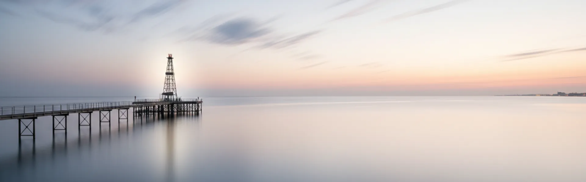
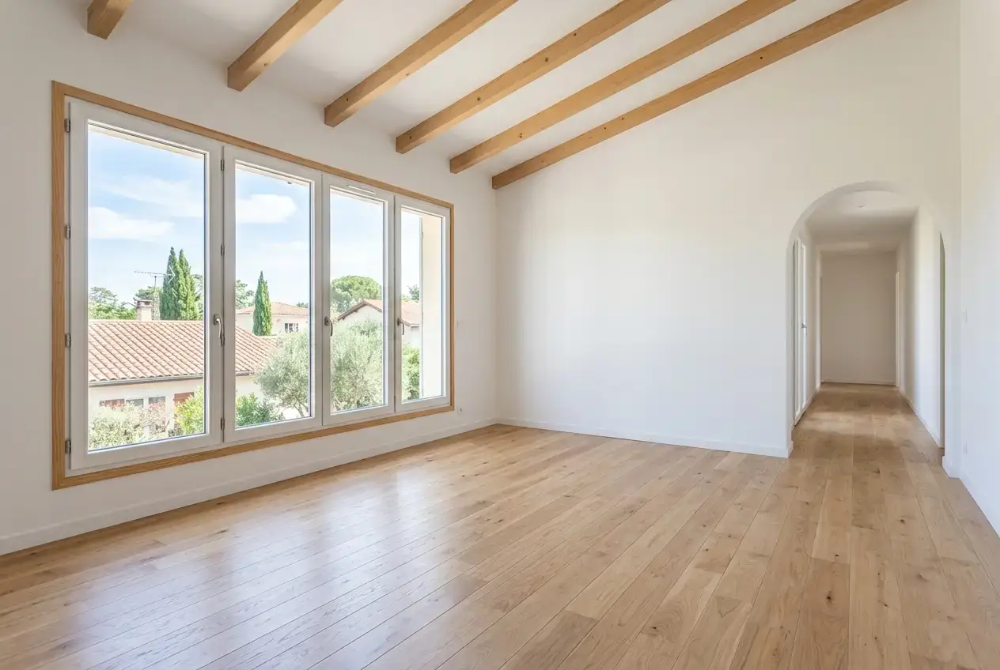
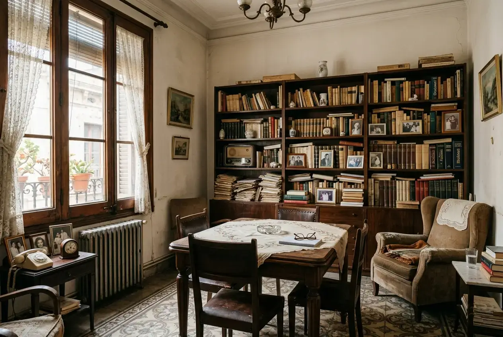
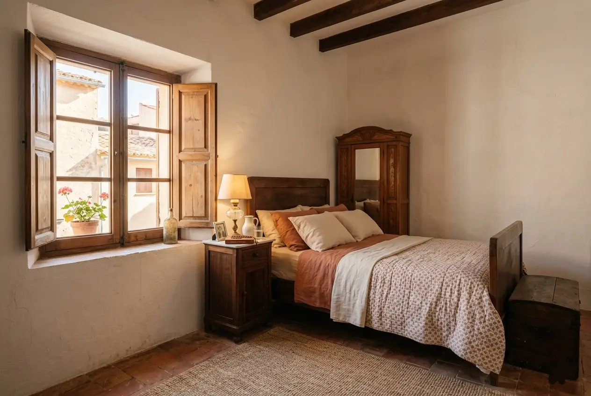

Badalona · Zona costanera · Barcelonès
Buidatge de pisos a Badalona
Servei professional a la tercera ciutat més poblada de Catalunya. Combinem eficiència logística amb gestió ecològica responsable de residus, adaptant-nos als desafiaments de la costa i el centre històric.
Especialistes a Badalona
Coneixem els reptes únics d'aquesta ciutat costanera
Badalona combina un centre històric amb carrers estrets, barris residencials en altura i una extensa zona costanera. Cadascuna d'aquestes àrees té els seus propis desafiaments logístics, i el nostre equip està preparat per a tots ells.
A més, Badalona té una xarxa de serveis municipals ben organitzada que ens permet gestionar residus, voluminosos i materials especials de forma ràpida i totalment regulada. El client no s'ha de preocupar de res: ni permisos, ni tràmits, ni desplaçaments.

Badalona
Serveis
Serveis especialitzats a Badalona
Adaptats a les necessitats de la ciutat costanera: gestió ecològica, pisos del centre històric i desafiaments d'humitat prop del mar.
Buidatge per defunció a Badalona
Gestió sensible en moments difícils. Coneixem els tràmits específics de Badalona i treballem amb màxima discreció, respectant els temps de la família i les particularitats de cada barri.
Llegir guia completaNeteja per síndrome de Diògenes
Protocols especialitzats amb gestió ecològica per a situacions complexes. Equips amb EPIs complets, desinfecció amb productes hospitalaris i ozonització. Màxima discreció i respecte mediambiental garantits.
Veure protocol de neteja DiògenesCanvi d'inquilins a Badalona
Solucions ràpides per a propietaris i immobiliàries. Deixem l'habitatge a punt per llogar amb gestió ecològica documentada de tots els residus generats.
Saber-ne mésPintura i reformes en zona costanera
Pintura professional adaptada a pisos de zona costanera amb materials resistents a la humitat i la salinitat per a més durabilitat. També fontaneria, electricitat i petites reformes.
Saber-ne mésBuidatge urgent 24h
Servei d'emergència disponible les 24 hores a Badalona. Amb gestió ecològica inclosa fins i tot en situacions urgents. Ideal per a desnonaments, canvis d'inquilí immediats o terminis de lliurament ajustats.
Saber-ne mésServei per a immobiliàries
Solucions professionals per a agències immobiliàries a Badalona. Tarifes especials, rapidesa garantida i gestió ecològica documentada per als seus clients. Coordinació perfecta perquè la propietat quedi a punt per a visites.
Saber-ne mésCasos habituals
El que trobem habitualment a Badalona
A Badalona ens trobem amb situacions molt variades. Alguns clients necessiten buidar un pis heretat que fa anys que està tancat, amb els danys propis de la humitat marina; d'altres requereixen una intervenció urgent per canvi d'inquilí o reforma.
Al centre històric —Dalt de la Vila— treballem amb vehicles adaptats a carrers estrets, coordinant horaris amb l'ajuntament per complir les restriccions de trànsit. Quan l'accés és molt complicat o l'ascensor és petit, realitzem el buidatge de forma manual amb equips especialitzats, protegint sempre els elements històrics de portals i escales.
Als barris costaners com El Gorg apliquem protocols específics contra la salinitat, avaluant cada objecte abans de moure'l i usant proteccions especials durant el transport.


Cobertura
Treballem a tots els barris de Badalona
Cobertura completa a la ciutat, des de la zona costanera fins als barris en altura. Coneixem les particularitats de cada zona.
El Gorg · Zona Platja Àrea costanera amb desafiaments d'humitat i salinitat. Apliquem protocols especials per a la protecció de mobles i gestió de residus. Coneixem les restriccions d'accés i els horaris de càrrega permesos en aquesta zona.
Centre · Dalt de la Vila Nucli antic amb carrers estrets i edificis històrics. Experiència en buidatges amb ascensors petits o per escala. Coordinem amb l'ajuntament els permisos necessaris i protegim els elements arquitectònics originals.
La Salut · Montigalà Zones residencials en altura amb desafiaments logístics. Gestió eficient en urbanitzacions i comunitats privades amb accessos controlats. Coordinació directa amb administradors de finques.
Sant Roc · Sant Crist Barris amb barreja d'edificis antics i moderns. Especialistes en gestió de permisos i coordinació amb comunitats de veïns amb normes estrictes.
Llefià · Bonavista Zones amb alta densitat residencial i blocs de diferents èpoques constructives. Adaptem l'equip i els vehicles a cada accés i tipologia d'edifici.
Canyadó · Progrés · Sistrells Barris residencials consolidats amb bones comunicacions. Major facilitat d'accés que permet optimitzar els temps de treball i reduir el cost final.
🗑️ Punts Verds Badalona
Punts nets municipals per a residus voluminosos i especials.
Residus municipals♻️ Agència de Residus
Normativa de gestió de residus de la Generalitat de Catalunya.
residus.gencat.catCom treballem
Procés senzill, sense sorpreses
Us expliquem pas a pas què esperar. Si a més necessiteu neteja, pintura o reparacions, ho coordinem tot amb un sol equip i un únic pressupost.
Contacte i valoració
Ens truca o emplena el formulari. En menys d'1 hora responem i acordem una visita o videotrucada per valorar el contingut, l'accés i les particularitats de la zona.
Pressupost tancat
Us lliurem un pressupost detallat i tancat. El que signa és el que paga, sense sorpreses. Inclou gestió de residus ecològica i els permisos necessaris.
Execució del buidatge
El nostre equip es presenta el dia acordat. Treballem de forma ordenada, respectant els horaris de la comunitat, les restriccions de la zona costanera i la normativa municipal de Badalona.
Gestió ecològica i lliurament
Classifiquem, reciclem o eliminem segons normativa amb documentació completa. Us lliurem els certificats de gestió de residus i la propietat en l'estat acordat.
Preus orientatius
Sense lletra petita
Pressupost tancat i gratuït en menys de 24h. Gestió ecològica documentada inclosa en tots els serveis.
Pis 50–60m² amb mobles buits
Pis 50–60m² amb mobles i estris
Casos d'acumulació severa, des de
* Preus orientatius. Pressupost exacte després de visita o videotrucada gratuïta.
Gestió ecològica inclosa
Tots els nostres serveis a Badalona inclouen gestió responsable de residus: separació en origen, lliurament en punts verds municipals i documentació completa del procés. Sense cost addicional i amb total transparència.
Clients satisfets
El que diuen els nostres clients a Badalona
«Van buidar el pis dels meus pares a El Gorg, prop de la platja. Em va impressionar la seva gestió ecològica de residus i com van protegir els mobles de la humitat. Molt professionals per a tota la zona costanera de Badalona.»
«Excel·lent servei al centre històric de Badalona. Carrers estrets, ascensor minúscul… i ho van resoldre tot sense problemes. A més, la seva gestió ecològica és un plus important per a nosaltres.»
«Tracte excepcional i molt professional a La Salut. Van gestionar tota la documentació ecològica que necessitava la comunitat. Ràpids, eficients i amb un preu molt just per a Badalona.»
Preguntes freqüents
El que ens pregunten sobre buidatges a Badalona
Resolem els dubtes més comuns sobre la ciutat costanera i el seu centre històric.
A Badalona apliquem protocols ecològics especials: separació exhaustiva en origen, lliurament en punts verds municipals, col·laboració amb gestors autoritzats de residus perillosos, i priorització del reciclatge i la reutilització. Documentem tot el procés per a la vostra tranquil·litat.
Sí. En barris costaners com El Gorg apliquem protocols específics: avaluació prèvia de l'estat de mobles i estris per humitat, protecció especial durant el transport, i assessorament sobre tractaments preventius per conservar objectes afectats per la salinitat.
A Dalt de la Vila i el nucli antic utilitzem vehicles adaptats, coordinem horaris amb l'ajuntament per a les restriccions de trànsit, i quan cal realitzem el buidatge manual per escala amb equips especials. Protegim sempre els elements històrics de portals i escales.
Sí. Oferim buidatge urgent en 24 hores a tota Badalona. Per la nostra proximitat i coneixement de la ciutat, podem organitzar-ho tot ràpidament fins i tot amb els protocols ecològics inclosos. Ideal per a situacions inesperades o terminis de lliurament ajustats.
Sí. Comptem amb la documentació necessària per treballar en zones amb protecció ambiental a Badalona. Coneixem les normatives específiques per a la gestió de residus en àrea costanera i les complim escrupolosament en tot moment.
Contacte
Necessiteu buidar una propietat a Badalona?
Us responem en menys d'1 hora. Pressupost tancat, sense compromís. Gestió ecològica inclosa.
Contacte directe
Telèfon
688 30 41 43Horari
Dilluns–Divendres: 8:00–20:00
Dissabtes: 9:00–14:00
Urgències disponibles 24h
Zona de servei
Badalona i tots els seus barris costaners i interiors.
Sol·liciteu el vostre pressupost gratuït
Empleneu el formulari i us truquem en menys d'1 hora amb un pressupost orientatiu.
Necessiteu buidar un pis a Badalona amb gestió ecològica?
Comptem amb l'experiència i els protocols especials per als desafiaments únics de Badalona. Pressupost tancat amb gestió ecològica inclosa i documentació completa.
Sol·licitar pressupost ara